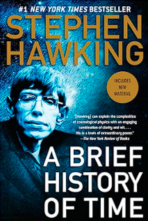

Buku 1
Buku ini adalah meditasi tentang keterbatasan manusia dan keinginan purba untuk memahami semesta. Hawking berbicara tentang singularitas, waktu imajiner, dan lubang hitam dalam buku ini. Akan tetapi buku ini lebih dalam dari itu. Dan mungkin di sana, dalam upaya memahami bintang-bintang, kita akhirnya menemukan pantulan wajah kita sendiri.
Rentan, sementara, tapi tak pernah berhenti bertanya.
Buku 2
Buku ini tentang kegilaan, idealisme, dan absurditas hidup. Don Quixote adalah kita semua, makhluk naif yang mencoba memberi makna pada dunia yang absurd, dengan segala romantisisme dan idealisme yang retak. Tapi justru dalam kegilaannya, dia lebih “waras” daripada dunia yang mengejeknya
Buku 3
Mungkin buku ini memang hanya dongeng anak kecil. Tapi bukankah setiap perjalanan besar dimulai dari cerita sederhana? Ayo beli buku ini untuk anak anda
Buku 4

Membangun perangkat lunak, dalam makna terdalamnya, adalah menciptakan struktur dari kekacauan. Dan di balik setiap baris kode, ada cerminan pikiran manusia yang mencoba mengatur dunia dengan keteraturan yang rapuh.
Buku 5
Buku ini berisi tentang bagaimana manusia, dari zaman ke zaman, mencoba memahami dirinya sendiri dan dunia yang tak pernah berhenti berubah. Russell mengajak kita berjalan melewati lebih dari dua ribu tahun pertanyaan. Dimulai dari Plato dan Aristoteles, yang membangun fondasi cara berpikir dunia Barat, melewati para teolog Abad Pertengahan yang memadukan iman dan akal, hingga ke Descartes, Hume, Kant, dan filsuf-filsuf modern yang meragukan segalanya, bahkan realitas itu sendiri.
Buku 6

Craig Wright dan Bryan Simms menulis dengan kesadaran bahwa musik adalah denyut nadi zaman, cermin dari rasa takut, cinta, pemberontakan, dan iman. Dari polifoni gereja hingga simfoni revolusioner, musik selalu hadir sebagai bisikan terdalam dari suatu era.